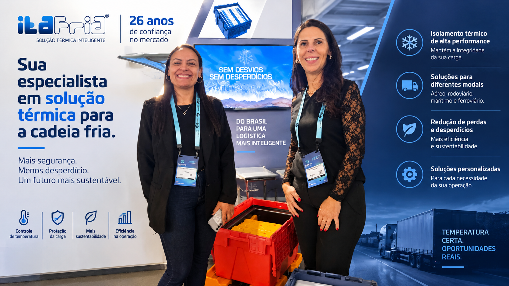

A Ita Frio resolve um problema de custo: caminhão frigorífico é caro, e nem toda carga sensível precisa de um.
A Ita Frio é fabricante de embalagens e soluções para logística térmica. Desenvolvemos uma caixa plástica retornável de alta durabilidade equipada com placas de PCM para o transporte com controle térmico passivo de produtos sensíveis, como chocolates e medicamentos.
A placa que absorve calor em vez de gelar
As placas de PCM contêm um fluido estabilizador térmico que absorve e retém o calor. Garantimos a manutenção da temperatura interna na faixa de 15°C a 25°C para chocolates, ou de 2°C a 8°C para produtos refrigerados, sem a necessidade de ar-condicionado ou refrigeração ativa no caminhão.
Testado nas rotas mais quentes do país
Realizamos testes rigorosos de laboratório em estufas térmicas calibradas para simular o verão brasileiro e, em seguida, testes práticos em rotas críticas reais. No transporte de chocolates para marcas como Mondelēz e Nestlé, testamos as caixas nas rotas mais quentes do país, como Ribeirão Preto e entregas na região Nordeste.
O ganho final é financeiro tanto quanto técnico.
A caixa elimina a dependência de caminhões frigoríficos caros na distribuição fracionada urbana. O cliente pode transportar chocolates e produtos refrigerados em caminhões sider ou baús secos comuns, mantendo a qualidade do produto intacta e reduzindo drasticamente os custos operacionais com frete especial.
Raio-X: Ita Frio
- O que é?
- Fabricante de embalagens térmicas passivas para transporte de produtos sensíveis ao calor.
- Qual problema resolve?
- Dependência de caminhão frigorífico caro para transportar chocolate e produtos refrigerados em distribuição fracionada.
- Qual a principal inovação?
- Placas de PCM que mantêm faixa de temperatura estável por horas, sem refrigeração ativa no veículo.
- Para onde vai?
- Novas matrizes de PCM para rotas de longa distância nas regiões Norte e Nordeste, sob temperatura extrema.